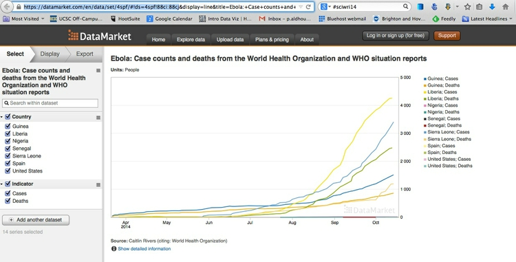

Datasets
Click on the title links to download the data. Please contact me before the class in which data will be used if you have any problems downloading!
Class exercises
Baseball salaries
Tab-delimited text file with salaries for players in Major League Baseball at the start of the 2013 season, from Baseball Prospectus.
Infectious disease and democracy
Tab-delimited text file with data from the Global Infectious Diseases and Epidemiology Network and Democratization: A Comparative Analysis of 170 Countries.
Berkeley traffic accidents
CSV file with data on fatal and injury collisions in Berkeley from 2007 to 2011, from the Transportation Injury Mapping System, plus supporting codebook.
Pfizer payments to doctors
SQLite database detailing payments by the drug company Pfizer to doctors, tab-delimited text file containing the same data, and tab-delimited text file documenting warning letters from the U.S. Food and Drug Administration to doctors involved in research on experimental drugs or medical devices. Data used in reporting this news story.
Making static graphics
A collection of data for our week 6 class on making graphics in R in tab-delimited text files.
Geocoding
A sample of addresses in San Francisco, for use in geocoding exercise, in two text files.
Making static maps/processing geodata
A series of data files for our week 9 class using QGIS.
Making interactive maps
A series of data files for our week 11 class using TileMill, Mapbox.js and Leaflet.
Visualizing networks
A series of data files for our week 12 class using Gephi and Sigma.js.
Coding interactive graphics, 1 and 2
A series of data files for our week 13 and 15 classes using D3.
Final projects
These datasets are suggestions, in which there are definitely stories to be found and visualized. But you are welcome to work on other datasets, with my agreement. You are also urged to explore other relevant data, as appropriate, to complement the datasets suggested below.
Baseball statistics
A series of tab-delimited text files detailing salaries for Major League Baseball players at the start of the start of the 2013 season, plus statistics on hitting, pitching and fielding from the 2013 regular season (does not include post-season games).
salaries_2013.txt, from Baseball Prospectus, also includes a field called warp, for Wins Above Replacement Player, and two fields relating this to the player’s salary, warp_per_mil, or WARP per $ million salary, and salary_per_warp. WARP is an attempt to quantify the number of extra games won by the team in a season with the player on its roster, compared to the number expected to be won if he were substituted for a “replacement level player” — who could be signed at minimal cost and effort. A whole team of such players would be expected to win just 50 games in a 162-game regular seaon. So WARP is a measure of player value that can be used to compare any player to another irrespective of their role on the team. The field pct is the players’ salary as a decimal fraction of the total for their team.
hitting_2013.txt, pitching_2013.txt and fielding_2013.txt all come from the sortable player statistics at MLB.com. For a full breakdown of the many fields in these files, hover over the field names on the website, or refer to this Wikipedia page.
The data cleaning assignment from the week 5 class produces a version of salaries_2013.txt that can be joined to the MLB.com data in SQLite or by using the dplyr package in R.
Alternatively, you may wish to work with Lahman’s Baseball Database, which contains a wealth of data on players, managers and teams from 1871 to 2013. Download the data in a series of CSV files from here.
This file documents the tables and fields, and how the tables should be joined together. For the player tables playerID is the unique code for each player that can be used to make joins. When loading this data into SQLite, this field can be used as a primary key for the tables in which it appears. For tables relating to teams or managers, you should create a new primary key, as we did in week 5 for the FDA data.
The Lahman database is also available as an R package, which after installation, can be loaded and viewed with this code:
# load the database
library(Lahman)
# view, for example, the Master table
View(Master)
Although you will not see them as objects in your Environment tab in R Studio, each of the tables in the database is now available as a data.frame. If you wish, you can convert them into objects in your local environment with something like the following code:
df_master <- Master
You can use the dplyr package to join and filter the data as required. See the class notes from week 6 and the links here and here for details on performing joins with dplyr.
North Atlantic storms
A series of files relating to North Atlantic tropical cyclones, including hurricanes.
storms.csv contains data on tropical storms and hurricanes compiled by the Hurricane Research Division of the U.S. National Oceanic and Atmospheric Administration. I have processed the raw data to give the following fields:
nameOfficial name for each storm; unnamed storms are listed asUnnamedand also numbered.yearmonthdayhourminuteDate and time fields for each observation. For recent storms, observations are recorded every six hours.timestampDate and time fields combined into a full timestamp for each observation in standardYYYY-MM-DD HH:MMformat.record_identThe entryLindicates the time at which a storm made landfall, defined as the center of the system crossing a coastline, recorded from 1991 onwards. Other entries are explained in the filenewhurdat-format.pdf.statusOptions includeHUfor hurricane,TSfor tropical storm andTDfor tropical depression. Other entries are explained innewhurdat-format.pdf.latitudelongitudeGeographic coordinates for the center of the system at each observation.max_wind_ktsmax_wind_kphmax_wind_mphMaximum sustained wind for each observation.min_pressMinimum air pressure at the center of the system for each observation.
This file contains data on storms from 1851 to 2013. However, I suggest restricting your visualizations to storms from 1990 and later, as data on storms before the modern satellite era is less reliable.
I have filtered this data and converted it to a shapefile giving the tracks of storms from 1990 onwards, in the subfolder storms_recent_tracks.
us_storms_emdat.txt contains information on casualties and damage caused by storms in the United States, downloaded from The International Disaster Database, from 1990 onwards. You will need to filter for Tropical cyclone in the subtype field to restrict the data to the same North Atlantic storms. est_damage is in $ millions, killed is the number of people killed and total_affected is the number of people injured, made homeless, or requiring other immediate assistance. See here for more details about the data.
There is no simple way to join this data to the storms.csv file, so you will need to manually edit the data in a spreadsheet to identify each storm in this file.
This collection of data is good for mapping (and including additional charts to visualize the strength of the hurricanes and the casualties and damage they caused). For this reason, I have included a range of shapefiles from Natural Earth, in the subfolders beginning ne_50m_. These give boundaries for countries and U.S. states, plus placemarks for major populated places, and the boundaries of urban areas. Zoomed in, the last shapefile can reveal when storms pass over centers of human population, which is when casualties are more likely. These shapefiles each come with a README.html file which can be opened in a web browser for more information.
As we saw in week 3, it is also possible to visualize data on North Atlantic storms using Tableau Public.
Wealth and wellbeing of nations
The class notes from week 6 show how to import data from the World Bank Indicators into R using the WDI package, how to filter the data using the dplyr package, and to export as a text file for use in other applications. Those notes also show how to convert World Bank data to “wide” format using the tidyr R package, which may be necessary to join to world shapefiles for mapping. The World Bank has a wealth of data on many aspects of countries’ wealth and wellbeing: There are many stories to be told from this data.
The download link above includes data for the Human Development Index, a measure derived by the United Nations Development Programme which, in that agency’s words, summarizes nations’ achievement “in key dimensions of human development: a long and healthy life, being knowledgeable and have a decent standard of living.” The health component is measured by life expectancy at birth; the knowledge component by mean years of schooling; the standard-of-living component by gross national income, corrected for purchasing power parity. The composite measure is converted to an index ranging from 0 to 1, using methods described here.
The HDI data is in two tab-delimited text files. hdi_1980-2013.txt shows trends in the index over time; note that the hdi_value fields are in wide format, and will need to be converted to long format, using R tidyr, for visualization with ggplot2 or Tableau Public, or to join with World Bank data imported into R. hdi_2013.txt includes a breakdown of the component measures that make up the index for that year.
The UNDP has other data available for download, including measures of poverty and gender inequality.
In week 5, we also saw how to download Gapminder data in bulk. Its data library includes many measures not available from the World Bank, so if you cannot find the data you want among the World Bank Indicators, try searching for it at Gapminder’s data download page. I advise saving the spreadsheets as tab-delimited text files for use in other applications. Again, Gapminder data is in wide format, and will need to be converted to long format using r tidyr for visualization in Tableau Public or R.
You will notice that neither the UNDP nor the Gapminder data contain ISO country code fields; also the country names used differ from those used by the World Bank. This is where the files undp_join.txt, gapminder_join.txt and iso_join.txt come in. They can be used in SQLite or using R dplyr to join data from the different sources (and from any other source that provides data about nations including their two- or three-letter ISO codes). I have already loaded these tables into a SQLite database: nations_join.sqlite.
Finally, I have included a world countries shapefile from Natural Earth in the subfolder ne_50m_admin_0_countries. You can join data to this shapefile for mapping. See the class notes from week 6 on exporting World Bank data from R in the correct wide format.
Global Terrorism Database
Maintained by the National Consortium for the Study of Terrorism and Responses to Terrorism (START) at the University of Maryland in College Park, the Global Terrorism Database contains information on more than 125,000 terrorist attacks from 1970 to 2013. It is a rich source of information on terrorist groups across the globe, and the attacks they are responsible for.
You can download the data from here, selecting the Download full GTD dataset option. An extensive codebook details all of the fields in the data.
The data is provided as a series of spreadsheets in .xlsx format. The file globalterrorismdb_0814dist.xlsx contains the entire database. I suggest that you import this data into Open Refine before processing any further, and create a new field giving the date of each event in standard YYYY-MM-DD format. This can be done from the eventid field.
You can then export as a CSV or tab-delimited text file for analysis in R, SQLite, Tableau Public, or QGIS. In SQLite, you can use the field eventid as a primary key, so make sure to retain this column when processing the data in Open Refine. Because there is no need to create a new primary key field, you do not need to create the table first if importing into SQLite. Simply use the import icon in the SQLite Manager:

When prompted, modify the table to give each field the correct data type as detailed in the codebook.
Do take care to read the Terms of Use and instructions for citing the source of the GTD data.
Ebola outbreak
If you wish to consider the challenge of visualizing a fast-moving news story for which data are updated daily, you may wish to explore data on the current ebola virus outbreak compiled by Caitlin Rivers, a graduate student in computational epidemiology at Virginia Tech in Blacksburg. To view the data, select Download ZIP from Rivers’ ebola Github repository, which also details the data she has compiled.
Given that this data is changing by the day, I do not suggest working with a static download of the data. Instead, you can access the data from R using the DataMarket API. By saving all of your steps, from data import onwards as an R script, you can run your scripts to update the data, analysis and charts at any time.
First install the rdatamarket package, then load with:
library(rdatamarket)
Navigate from DataMarket’s ebola topic page to the data you are interested in by clicking the Explore links. At the data page, select the data you want to capture using the checkboxes at left, then copy the url up to but not including &display, as shown:

You can then import this data as an R data frame using the following code:
dataframe_name <- dmlist("url")
url is the url you just copied, and dataframe_name will be a specific descriptive name you select for the new data frame.
The Date fields in this data are likely to import as factors, or categorical variables, rather than dates. Check the format of this and other fields using this code:
str(dataframe_name)
Convert the Date field to date format as follows:
dataframe_name$Date <- as.Date(dataframe_name$Date)
Having done this, the Date field should plot correctly on the X axis in charts made with ggplot2.
If working with this dataset, you are strongly urged to seek other data on historical ebola outbreaks, and contextual information (for example from World Bank data, see above) to explain why the West African nations worst affected in this outbreak have coped more poorly than the Central and East African nations affected previously. You may also wish to make maps of the outbreak.
California traffic accidents
This is the full version of the Transportation Injury Mapping System dataset we explored in week 3, detailing injury and fatal traffic accidents for the whole of California from 2003 to 2011. There are three CSV files: collisions_03_11.csv contains the same fields as the file you used previously; party_03_11.csv and victim_03_11.csv have more information about the people involved in each accident. The codebook explains the fields in these tables, and how they should be joined.
If you choose to work with this dataset, I will be expecting much more than a light reworking of the Tableau Public assignment from week 3: You will need to convince me that you are working on a strong visual story based on original, insightful exploration of the data.